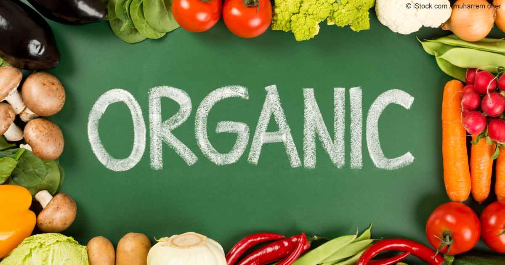
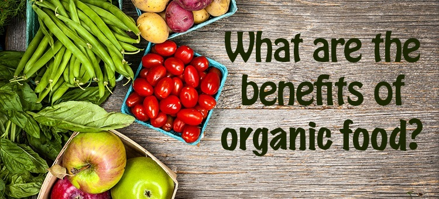

The George Mateljan Foundation is a not-for-profit Foundation with no commercial interests or advertising. Our mission is to inform our viewers on the healthiest way to cook and eat
The labeling of organic foods. Labeling standards are based on the percentage of organic ingredients in a product. Below are explanations of the organic food labeling:
A civil penalty of up to $11,000 for each offense can be levied on any person who knowingly sells or labels as organic a product that is not produced and handled in accordance with the National Organic Program's regulations.
